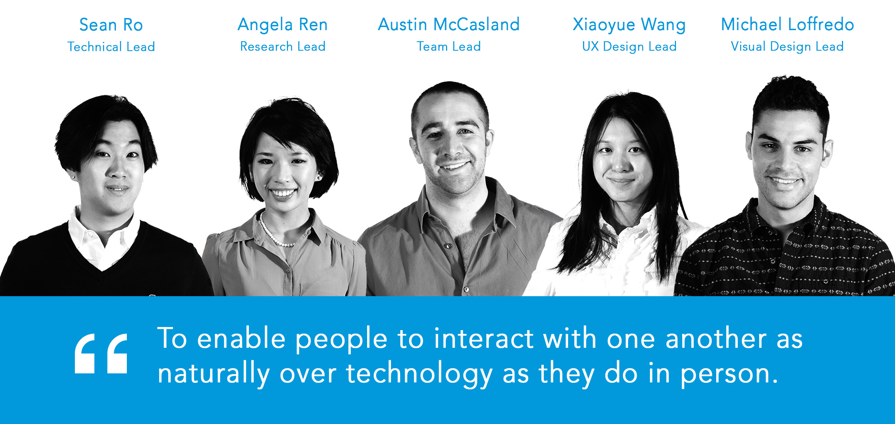
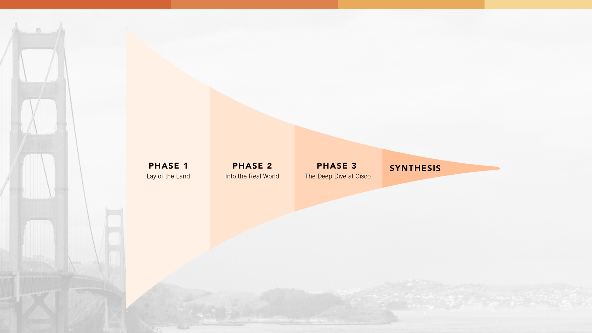
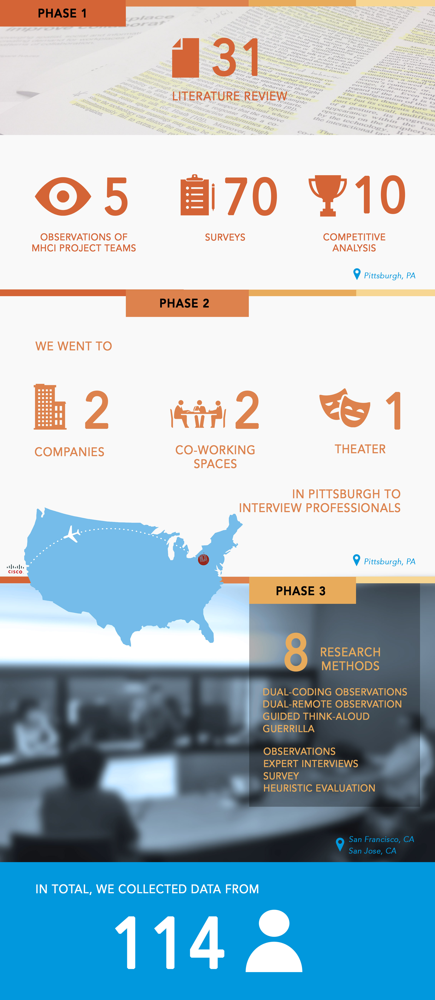
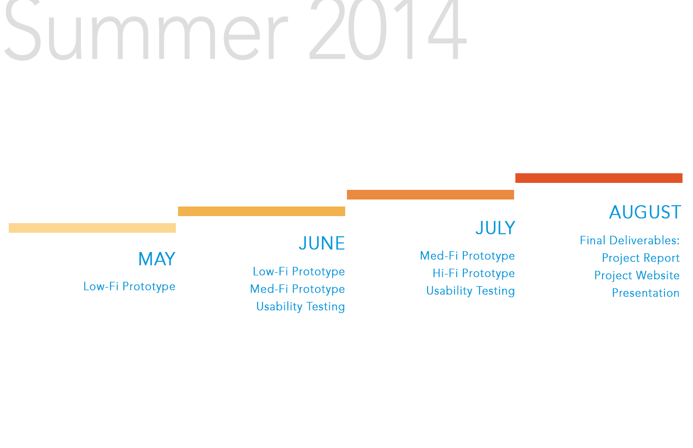
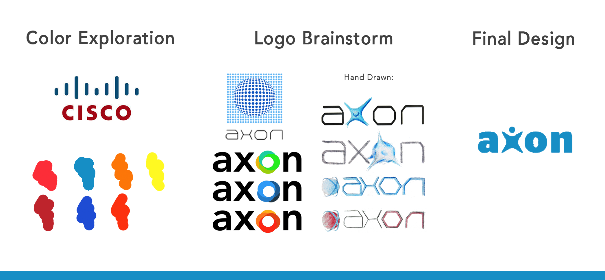

MHCI Capstone project. On going.
 What do we lose during a remote collaboration that would come naturally during face-to-face? Can technology replace unspoken cues body language and the environment? In 8 months, we research and create a design solution that encourages ad-hoc micro-collaborations in the enterprise 5-10 years in the future.
What do we lose during a remote collaboration that would come naturally during face-to-face? Can technology replace unspoken cues body language and the environment? In 8 months, we research and create a design solution that encourages ad-hoc micro-collaborations in the enterprise 5-10 years in the future.
This is a MHCI capstone project, and our client is Cisco System, inc.
The Team
We are an interdisciplinary team working in an agile environment throughout the research and product development cycle.

Research

Due to the confidential nature of this project, I cannot share our ideas and designs. Nevertheless, I document the process throughout the project.

After synthesizing all the data, we came up with the visions. I contributed a lot to the visioning stage, as I not only came up with a lot of ideas, but clarified visioning direction and paved the way for final design decision.
I also did all the graphics and storyboards in the spring research report.
Design
Right now we are doing iterative design and testing with users. Stay tuned!
Team Logo Design: my starter

Jan 2014 - Aug 2014
Austin McCasland
Angela Ren
Sean Ro
Michael Loffredo
UX Design Lead
- Prototype
- UX Design
- Interaction Design
- Storyboard
- Graphic Design
- Research
Contextual Inquiry
Guerrilla Interviews
Affinity Diagramming
Visioning
Prototyping